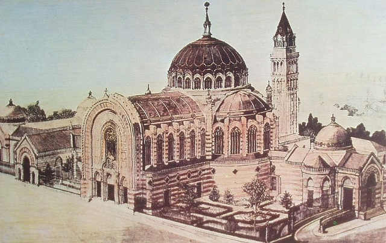
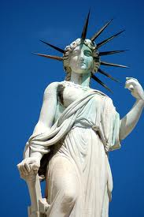
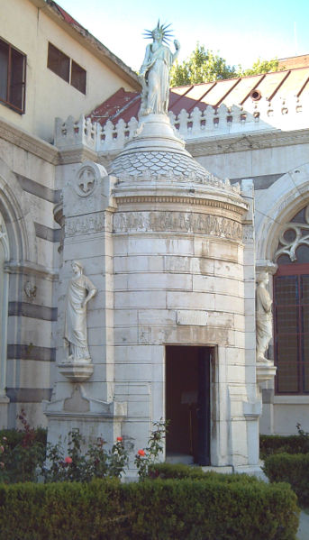
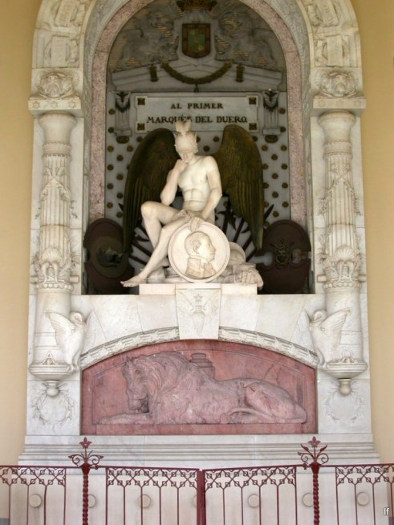
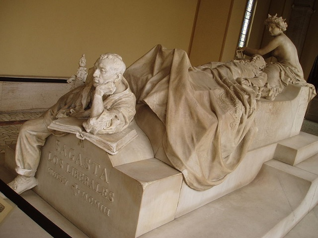
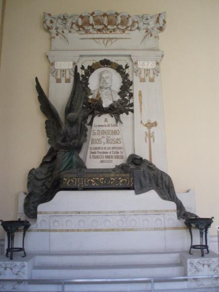
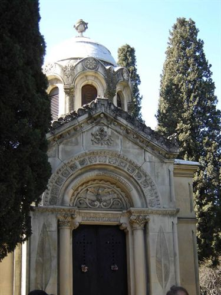
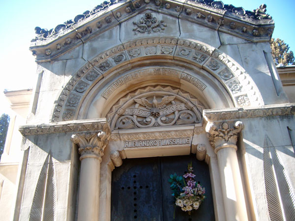

|
Apuntes tomados de la conferencia “Botánica funeraria masónica” organizada por el Real Jardín Botánico de Madrid, el 24 de mayo de 2012. A cargo de Eva Sanchez (fotógrafa) y Teresa Llopis (historiadora)

Esta conferencia trata de abordar el arte funerario desde una perspectiva simbólica ya que en los últimos años se ha ido perdiendo el conocimiento de la simbología usada antiguamente. Vamos a analizar uno de los edificios más representativos de este arte, el Panteón de los Hombres Ilustres, ubicado en Madrid.
El Panteón de los Hombres Ilustres está lleno de simbología masónica. Es un edificio de estilo neobizantino. Dicho estilo favoreció la ampliación de los patios en los cementerios.
Antes que nada no estaría de más diferenciar lo que es un panteón de lo que es un mausoleo. En un panteón hay varios cuerpos enterrados, mientras que los mausoleos son monumentos de carácter conmemorativo que solo guardan un cuerpo.
Cuando se construyó el Panteón de los hombres ilustres se siguieron una serie de normas muy estrictas. Por ejemplo, el que diseña y construye la tumba debía haber pasado por un proceso de iniciación y tener los conocimientos adecuados. El Panteón respeta la simetría sagrada y está lleno de rosas y lirios blancos, flores de gran carga esotérica.

Empezamos el recorrido visual con la estatua que está en el patio del edificio. La estatua lleva el tocado frigio que pusieron de moda los revolucionarios franceses. Lleva recogido el pelo con cinco tiras que se aprecian por detrás. El número cinco es uno de los más repetidos en la numerología masónica. También aparecerán repetidamente el tres y el siete. Esta escultura que representa a la Libertad es obra de Ponciano. La escultura lleva un collar hecho de flores de lis. Esta flor está asociada a la ninfa Iris, encargada de llevar las almas de las mujeres al otro mundo. Mercurio por el contrario es el que se encarga de conducir las almas masculinas. La corona tiene 13 rayos. En los frisos observamos hojas de palmera y más flores de lis. La flor de lis era el emblema de la realeza del mundo, de los descendientes de María Magdalena. Los cálices de las flores que miran hacia arriba simbolizan la recepción de los bienes del cielo.También podemos observar una cruz celta.
Debajo del monumento hay una cripta que fue construida por Federico Aparici en 1857.

A finales del siglo XVII se gesta la Sociedad de la orden de los jardineros.
Los francmasones eran los que tallaban la piedra fina, y los rougmasones eran los canteros.
Las ofrendas vegetales tenían un gran valor. Por lo que suelen aparecer representaciones realistas o estilizadas de distintas flores.

En el sepulcro del Primer Marqués del Duero vemos un pórtico que bien puediera ser la entrada a una logia. Es una tumba mural.El general está enterrado detrás del león. Se puede apreciar como elemento decorativo las ramas cruzadas de laurel florido. El hecho de que tengan flores representa el cénit de la vida y hay que recordar que el laurel era la planta consagrada a Apolo.
La encina es un árbol ancestral en la cultura celta. Hay tres variante de hojas. La particularidad recae en que las hojas viejas no se caen hasta que las nuevas hayan brotado. El fruto de la encina representa la fuerza, la permanencia y la constancia.
Podemos ver una escultura del genio o espíritu de la guerra. Adorno de palmas que simbolizan el triunfo y la victoria ganada tras el esfuerzo y la virtud.

Mariano Benlliure es el autor de las tumbas de Sagasta y Canalejas. Conocía perferctamente la simbología masónica y la botánica funeraria. A continuación vamos a describir el conjunto de Sagasta.
Podemos ver a los pies de la escultura a un obrero que tiene una Biblia abierta por el Evangelio de San Juan, capitulo 14, versículo 24. Se relaciona con la renovación de la naturaleza y las labores del campo. El monumento consta de tres escalones. Vemos flores de manzano, que tienen cinco pétalos, en representación de las cinco llagas de Cristo. El manzano es otro árbol cargado de simbolismo. Como ejemplo aludiremos a la Virgen de Atocha que tiene una manzana en la mano.
Detrás del cuerpo esculpido en mármol de Sagasta, se sienta la figura de la Historia. Lleva un tocado de hiedra. La hiedra simboliza el abrazo avasallador, el cariño sublime, y la perpetua inmortalidad del alma. También evita el acaloramiento de la mente promoviendo la templanza. En la mitología podemos ver la aplicación de este significado gracias a Baco, que lleva en su corona tanto hojas de vid como de hiedra.
Sagasta llegó al grado 33 en masonería. Es el grado del venerable.
Lleva una rama de olivo. El olivo no se debía plantar en los cementerios por tener fruto. No estaba bien visto comer cualquier fruta que saliera de la tierra de un cementerio. Pero el olivo representa la paz. Y es de gran importancia desde la antigüedad ya que se usaba el aceite para los rituales y el embalsamamiento. La momia de la Duquesa de Alba que descansa en la hermita de San Isidro, se conserva gracias a aceites vegetales.
La palabra sarcófago quiere decir “comer carne”. Se supone que la piedra aceleraba la descomposición de la carne. El norte representa la oscuridad. A los suicidas y neonatos se les enterraba hacia el Norte.
La corona de espinas era de acacia, madera incorruptible. Representa el más allá y el conocimiento. La flor tiene forma de tubo y atrae a las abejas (trabajo en común, compañerismo). Moisés mandó hacer el tabernáculo y el arca de la alianza con esta madera, se dice que el barco de Noé también era de acacia.

En el mausoleo de pared de Ríos Rosas vemos a la Nación representada en cuerpo de mujer que llora sobre el ataúd. Él está enterrado justo debajo.
En las necrópolis griegas se utilizaba el ciprés, el pino para los ataúdes.
A cada lado deI monumento hay un incensario. Antiguamente los velatorios eran larguísimos porque se esperaba que el difunto reviviera en cualquier momento. Por lo cual se colocaba incienso evitando así el mal olor. En los cementerios había un sistema de campanillas por si acaso…
En la parte superior observamos rosas y medallones florales. La rosa blanca está asociada con la muerte en el arte paleocristiano. Las rosellas o rosalias romanas eran fiestas que se celebraban en el cementerio, la gente tiraba pétalos sobre las tumbas. Los arbustos espinosos se descartaban por truncar la paz del muerto.
Detalles de la calavera con las tibias, los ángelitos susurrando secretos... Acanto y flor de adomidera,que simboliza el sueño eterno.
Las flores en genral representaban la brevedad de la vida.

Abandonamos un momento el Panteón para hablar del panteón de Lassalle en el Hipogeo de San Isidro, 1808-1873.
En el cementerio de San Isidro hallamos este panteón de Alejandro Lassalle (1881) en el cual no hay ningún símbolo cristiano. Sí se observan simbolos masónicos como los tres puntos en vertical entre el nombre y el apellido (sabiduría, belleza, fuerza) y las hojas de acacia en las jambas del edificio. En la entrada al monumento se pueden ver las columnas jakim y boaz, con sus capiteles de hojas de acanto. La planta es de cruz griega.En la cúpula hay un cenotafio, urna con las cenizas del muerto. En los capiteles aparecen granadas, fruta de muchas semillas representando a los hermanos masones dispersos por el mundo. La entrada está orientada al oriente. Una tótola,que simboliza el amor y fidelidad, corona la dedicatoria de su esposa.

Simbolismo y curiosidades de los árboles y las flores:
La siempreviva, de color amarillo, representa la luz, el resplandor. Una vez cortada es aún más bella, echa raíz en cualquier sitio.
Las coronas de hoja de acacia y de laurel forman parte de un ritual masónico. Hay que dar tres veces con el mollete de madera. Se recitaban las novenas de manera tradicional. En el noveno día se cierra el círculo de protección.
Las coníferas no rompen las tumbas ni se nutren del sustrato. El arce representa la metamorfosis.
En las necrópolis del mediterráneo se ofrendaban coronas para los iniciados. En el antiguo oriente las palmas se relacionan con Jesús. En el Panteón de los Hombres Ilustres se pueden apreciar las palmeras en la bóveda. En las pechinas hay siete ramas, hay también estrellas de seis puntas.
Los jardines fúnebres solían estar cercados por una verja de hierro que servía para separar a los muertos de los vivos.
Los tejos son árboles muy tóxicos. Los druidas lo utilizaban para hacer flechas, arcos y lanzas. Resisten a la humedad y su fruto no se ve, por lo que son muy apropiados para los cementerios.
Juan Gras es el jardinero que se inspiró en el tratado de botánica funeraria publicada por Celestino Ballaré en 1885.
El sauce es con lo que azotaron a Cristo y es el árbol en el que Judas se suicida.
Los cipreses, llamados dedos de Dios, elevan al difunto a los cielos.
Los lilos tienen el color violeta del luto.
La violeta representa los cinco sentidos.
La malva crecía siempre en los cementerios. De ahí la expresión “criar malvas”.
El verbo palmar como sinónimo de morir viene de la costumbre de medir los ataudes por palmos.
Se solía rellenar el ataúd con hojas de ciprés para conservar el cuerpo. Plutón rige las plantas perennes.
Tórtola. Las plantas asociadas con la magia no se podían sembrar en los cementerios.
El tipo de fauna que suele aparecer en el arte funerario es de carácter nocturno. Animales que se desenvuelven en la noche como el murciélago, la lechuza y los gatos. La lechuza que aparece en una de las tumbas tiene 33 plumas. La mariposa de la muerte es también famosa por tener una calavera en el tórax.
En la cultura cristiana la higuera del Génesis es el árbol del pecado. También en la capilla sixtina aparecen tapados con higuera.
Hay un estudio del Cupresus Sempervivens con la cruz de Cristo.
El roble era el árbol de navidad. Los celtas tenían 21 árboles sagrados. Al roble le solían colgara adornos para que reviviera de cara a la primavera.
El abedul era otro árbol consagrado a los equinoccios y solsticios.
El abeto,típico árbol de invierno, tenía cierta relacion con la sangre de Cristo, y una especial conexión con las fuerzas del universo.
De fresno siempre se han hecho varitas.
En la cultura china tenemos el bambú que simboliza la flexibilidad, el ciruelo, la belleza y el pino la juventud según el taoismo.
En el islam la palmera macho no da frutos y por ello la suelen utilizar de modo funerario.
Los egipcios y los griegos ponían miel en las tumbas.
|
 RSS
RSS